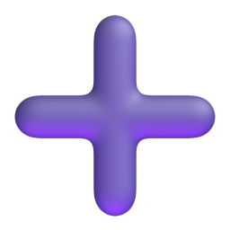
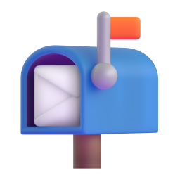
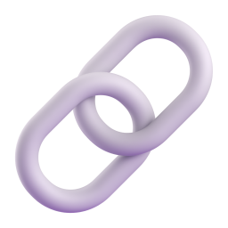

GooseRSS 阅读器

添加订阅
检查更新
全部已读
全部
未读
收藏
标题
来源
时间
还没有文章，先添加几个订阅源吧。
正在加载…
返回
正在加载…
浏览器打开
收藏

标为未读
复制链接
正在加载正文…
添加订阅源
订阅地址（每行一个，也支持逗号 / 空格分隔；# 开头为注释）
分组
检测全部
全选可用
从 OPML 导入…
导入
状态
标题
地址
文章
等待输入地址
取消
导入勾选的订阅源
编辑订阅源
标题
地址
主页
分组
标签
备注
刷新周期
分钟
（0 = 用全局周期）
启用
删除
取消
保存
设置
通知
刷新
外观
数据
关于
启用新文章提醒
每个源合并条数
一次最多
提示音
使用系统通知（Win10/11 推荐）
免打扰时段
发一条测试通知
全局周期
分钟
超时
秒
并发
启动即隐藏到托盘
关闭窗口时缩到托盘
主题
浅色
深色
界面字体
界面字号
px
正文字号
px
侧栏宽度
px
窗口大小
×
px
恢复默认窗口大小
打开文章即标为已读
导出 OPML…
导入 OPML…
清空文章（保留收藏）
版本
本地优先的 RSS 订阅提醒工具：后台常驻，谁发了新文章第一时间 通知你，点通知直接打开原文。
仓库地址

检查更新
取消
保存